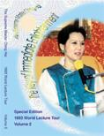
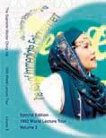
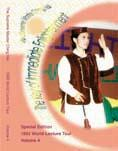
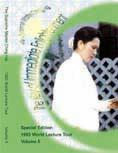
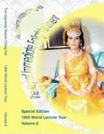

| Un livre inoubliable |
|
|
(Initialement en anglais) |


1993
Les livres sur la tournée mondiale de conférences de Maître Suprême Ching Hai en 1993 sont magnifiquement reliés, et la collection complète est présentée dans un coffret attrayant. Chaque volume de la collection présente sur sa couverture une photographie en couleurs de Maître, avec au dos du livre, une citation qu'Elle a spécialement sélectionnée. A l'intérieur, chaque livre contient une introduction de la ville qui a été visitée, la conférence donnée par Maître donnée dans ce lieu, ainsi que la session de questions-réponses qui s'en est suivie. Comme extra bonus, des photos en couleurs de Maître dans les 16 pays qu'Elle a visités sont insérées dans chaque livre, ressortant des pages comme des joyaux scintillants dans une lumière éclatante.
Tout au long des 28 conférences complètes présentées dans ces livres, beaucoup de questions sont posées durant la tournée par les personnes en quête de spiritualité. Dans Ses réponses patientes et souvent pleines d'humour, Maître répond à chaque question brillamment, illuminant le problème de la meilleure manière possible. Ouvrir une page dans n'importe lequel de ces volumes vous révèle une réponse enrichissante à une question qui peut vous être venue à l'esprit un jour, même si vous ne vous rappelez pas vous être posé cette question jusqu'à ce que quelqu'un d'autre le fasse à votre place !
Le dévouement de ceux qui ont travaillé aux côtés de Maître tout au long de cette tournée ressort clairement au cours des rapports fourni par l'équipe de rédaction. Continuellement inspirés par l'amour et les bénédictions de Maître, ces amis initiés ont humblement décrit comment ils ont été capables de surpasser leur ego, leur mental, et de franchir les obstacles extérieurs afin d'accomplir le travail vraiment magnifique de cette tournée mondiale de conférences en 1993.
Dans une émouvante préface du Volume 1, un initié décrit la bonté même de l'amour altruiste de Maître : " Ses paroles ne sortent pas de Ses propres besoins intérieurs, mais plutôt elles existent pour les besoins des autres. " Les enseignements présentés dans cette collection illustrent encore et encore la gentillesse de l'esprit de Maître, qui sont à la hauteur de Ses efforts incessants à notre égard. Elle nous ne demande rien, mais désire seulement nous révéler notre propre Vraie Nature.
Le message de Maître s'exprime d'une multitude de façons, de sorte que nous pouvons toujours trouver ce qui nous touche le plus personnellement dans Ses paroles. De la même manière que la résonance inspirée par Les magnifiques créations de Ses parures qui sont là pour combler les rêves et les visions de ceux qui La regarde, les paroles de Maîtres résonnent aussi dans nos coeurs impatients, nous procurant "la reconnaissance" et nous faisant réaliser à travers Elle notre connexion avec Dieu. La remarquable façon de s'exprimer de Maître exprime l'Amour qui se trouve au delà de tous les mots. Comme un initié l'a écrit dans un de ces livres : " Chaque conférence donnée par Maître a pour effet de pouvoir percer le coeur de tous ceux qui L'écoutent. C'est comme si Elle parlait personnellement des problèmes individuels de chacune de ces milliers de personnes dans l'assistance. "
Petit et concis, chacun des livres de cette collection peut être glissé dans un sac ou dans une poche. Dans le bus, à la maison et même au travail, vous pouvez alors vous référer aux messages illuminés de notre Maître bien-aimée, encore et encore, en trouvant les paroles inspirées dont vous avez besoin à n'importe quel moment ou dans n'importe quelle situation.
|
|